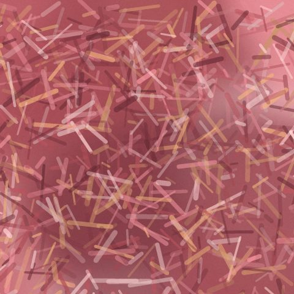

“I paint the hour when a place stops being a view and becomes a feeling.”

Lia MorénPainter, Haifa · opens Low Tide tonight“I paint the hour when a place stops being a view and becomes a feeling.”

Lia MorénPainter, Haifa · opens Low Tide tonightHear it from the artists. Then go and see it.